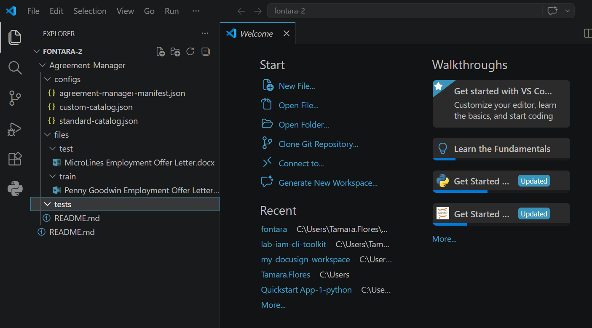
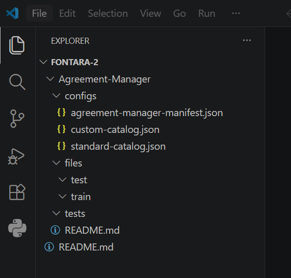
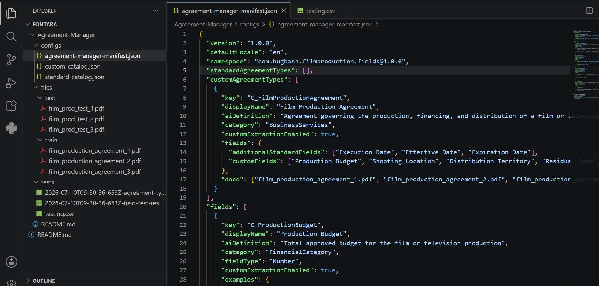
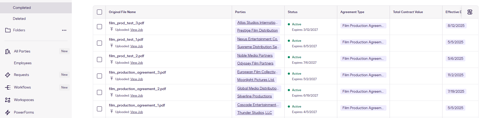

Docusign IAM Toolkit
Simplify the implementation of Docusign Agreement Manager -configure custom fields and types, train and validate AI extractions, deploy across accounts, and ingest agreements in bulk, all through the Docusign CLI.
0 · Overview & Handbook Guide
~5 min0.1 Introduction & Contents
The Docusign IAM Toolkit simplifies the implementation of Docusign Agreement Manager. With this toolkit, you can programmatically:
- Create custom fields and custom types in bulk
- Map additional standard and custom fields to both standard and custom types
- Provide AI training datasets for custom extractions
- Validate extraction accuracy through automated testing
- Deploy validated Agreement Manager configurations across Docusign accounts (not covered in this handbook -see instructions below)
- Ingest agreements in bulk
This manual provides a detailed guide for installing and setting up the IAM Toolkit, followed by instructions on how to use its features through the Docusign CLI.
0.2 How to Use This Handbook
This handbook is designed to be self-paced and self-contained. You can follow it during a facilitated session or work through it independently. Each section is tagged so you know what to expect:
| Tag | What it means |
|---|---|
| Setup | One-time configuration steps -do these before the exercises. |
| Theory | Background and concepts, so you understand what you're doing and why. |
| Exercise | A hands-on step. Follow along and run the commands in order. |
1 · Initial Setup and Installation
SetupBefore using the toolkit, verify your prerequisites and install the Docusign CLI globally.
1.1 Docusign Account
PrerequisiteA Docusign demo account. This is a workshop, so use a demo (developer) account only -do not use a production account. To create a demo account, visit https://www.docusign.com/developers/sandbox.
1.2 Terminal / Command Line
PrerequisiteThe IAM Toolkit is operated through a CLI (Command-Line Interface) where you type commands in a terminal. Your OS includes a built-in option:
| OS | Recommended Terminal | Notes |
|---|---|---|
| macOS | Terminal (built-in) or iTerm2 | Found in Applications → Utilities → Terminal |
| Windows | Windows Terminal or PowerShell | Run as Administrator when installing npm packages globally |
| Linux | Default terminal (e.g., GNOME Terminal) | Typically opened with Ctrl + Alt + T |
1.3 Node.js and npm
PrerequisiteNode.js is the runtime environment required to run the CLI. npm (Node Package Manager) is bundled with Node.js and is used to install the toolkit.
Installation:
| OS | Method | Instructions |
|---|---|---|
| macOS | Official installer | Download the LTS version from nodejs.org and run the installer |
| Homebrew | Run brew install node (install Homebrew first from brew.sh if needed) | |
| Windows | Official installer | Download the LTS version from nodejs.org and run the installer |
| Linux | Package manager | Follow instructions at nodejs.org |
Verify installation:
$ node --version
$ npm --versionBoth commands should return a version number (e.g., v20.11.0 and 10.2.4). If either command is not recognized, restart your terminal and try again.
For example:
PS C:\Users\Docusign.PSA\Documents\cli-toolkit-test\test08072026> node --version
v24.17.0
PS C:\Users\Docusign.PSA\Documents\cli-toolkit-test\test08072026> npm --version
11.13.0The $ symbol represents your terminal prompt -do not type it. Only type the text that follows.
1.4 Code Editor
PrerequisiteYou'll need a code editor to create and modify JSON configuration files (such as agreement-manager-manifest.json) and CSV files (such as testing.csv).
Recommended: Visual Studio Code -A free, cross-platform editor with built-in JSON validation, syntax highlighting, and an integrated terminal (Ctrl + `) that lets you edit files and run CLI commands in one window.
Download for your OS:
1.5 Install Docusign CLI
InstallationInstall the npm package globally:
$ npm i -g @docusign/cliOR, if you are not an admin / on macOS/Linux requiring elevated privileges:
$ sudo npm i -g @docusign/cliPlease run the powershell as administrator to execute the command.
1.6 Verify Your Installation
VerificationAfter installation, you can verify the CLI is installed and accessible by running the root command. The help output will be displayed.
$ docusignExpected output:
╔══════════════════════╗ v1.0.0-beta
║ DOCUSIGN CLI ║ Workspace: No workspace found
╚══════════════════════╝ Environment: demo
https://developers.docusign.com/docusign-cli/
Usage: docusign [command] [options]
Docusign CLI for building and deploying on Docusign IAM
Commands:
auth Manage authentication with Docusign
scaffold [options] Create a new workspace and project structure
workspace|ws Manage Docusign CLI workspaces
project|proj Manage projects within the current workspace
agreement-manager|agm Agreement Manager feature commands
update [options] Update the Docusign CLI to the latest version
logs Manage and view debug log files
help [command] display help for command
Tip: Use 'ds' as a short alias for 'docusign'2 · First-Time Customization
Core WorkshopA partner is standing up Agreement Manager for a customer for the very first time. There is no existing configuration to preserve -you are defining custom fields, custom agreement types, and standard-type extensions from scratch, training AI extraction, validating accuracy in a demo account, and only then promoting the proven configuration to production.
You walk away with a validated Agreement Manager configuration live in the customer's production account, plus a repeatable IAM package you can reuse. Use this path when the custom catalog is empty or you are configuring a brand-new account. If a configuration already exists and you only need to change it, use Use case 2 instead.
What this use case covers
The root Agreement Manager command set is the engine of first-time customization. Working through this use case, you will:
- Retrieve existing configurations, including custom fields, custom types, and their AI extraction training datasets
- Retrieve field mappings, including additional standard and custom fields mapped to both standard and custom types
- Create custom fields and custom types in the Agreement Manager
- Ingest agreements into Agreement Manager
- Test Agreement Manager's AI extraction accuracy
2.1 Create Your Working Folder & Authenticate
ExerciseStep 1 - Create a working folder
Before running any CLI commands, manually create a folder on your Desktop called docusign-cli. This keeps all your workshop files in one place.
| OS | What to do |
|---|---|
| macOS | Right-click on your Desktop, select New Folder, name it docusign-cli |
| Windows | Right-click on your Desktop, select New > Folder, name it docusign-cli |
Step 2 - Open your terminal and navigate into it
macOS:
$ cd ~/Desktop/docusign-cliWindows (PowerShell as Administrator):
cd $HOME\Desktop\docusign-cliThe CLI scaffold command and all subsequent commands create files inside whatever directory your terminal is currently in. If you skip this step, files will land in your home directory or wherever you last navigated.
Step 3 - Authenticate the CLI
Now authenticate the CLI against your Docusign demo account. The docusign auth login command uses OAuth PKCE - it opens your browser for login, retrieves a token, and stores your credentials locally. You must authenticate before running any other CLI commands.
$ docusign auth login -hOutput:
Usage: docusign auth login [options]
Login to Docusign using OAuth PKCE flow
Options:
-e, --environment <env> Target environment (production|demo) (default: "demo")
-p, --port <port> Callback server port (default: auto-select 8080-8085)
--no-browser Do not automatically open browser
-h, --help display help for commandClick here to view details on the different options
| Option | Shorthand | Description | Accepted Values | Default Value |
|---|---|---|---|---|
| --environment | -e | The target Docusign environment to authenticate against. | production, demo | "demo" |
| --port | -p | The local port the CLI uses to host a temporary server to receive the OAuth callback. | An available port number (e.g., 8081) | Auto-selects between 8080 and 8085 |
| --no-browser | N/A | Prevents the CLI from automatically opening the browser for the login URL. The URL will be printed to the console for manual access. | N/A (Flag) | Automatically opens browser |
Login to the Demo Environment
$ docusign auth loginAfter completing the browser login, if your credentials are associated with more than one Docusign account, the CLI will prompt you to choose the account you want to work with. Select the account that has Agreement Manager enabled for this exercise. Once selected, the CLI confirms your user, account, token, and feature availability:
✔ Logging into demo (use -e to change the environment), continue? Yes
▌ Logging into Docusign...
Opening browser...
✔ Browser opened
(Complete the login in your browser)
Multiple accounts found for docusign.psa@docusign.com:
✔ Select which account to use: [24] EPPC
Account ID: 197c3762-1f04-4f45-ac67-231e885b6bb0
Base URL: https://demo.docusign.net
✔ Login Successful! Welcome, Docusign PSA!
User Information:
Name: Docusign PSA
Email: docusign.psa@docusign.com
User ID: 06358a56-563f-4ca8-b7e6-604520ecc01c
Account Information:
Account: EPPC
Account ID: 197c3762-1f04-4f45-ac67-231e885b6bb0
Environment: demo
Base URL: https://demo.docusign.net
API Base URL: https://s1.us.services.demo.docusign.net
Token Information:
Expires in: 480 minutes
Expiration: 08/07/2026, 18:53:57
Feature Availability:
───────────────────────────────────────────────────────────────────────────
✔ Agreement Manager Plan: Agreement Manager is enabled (trial)
✔ Agreement Manager Migration: Up to date
✔ CLI Version: v1.0.0-beta (latest)Click here to see other login alternatives (not relevant to this exercise)
Login to the Production Environment. Use the -e flag to specify the production environment.
$ docusign auth login -e productionLogin Manually (No Browser). Use the --no-browser flag when running the CLI on a remote server or an environment without a GUI. The CLI will print the full login URL, which you must copy and paste into a web browser on another device to complete the login.
$ docusign auth login --no-browser2.2 Scaffold the Workspace & Project
ExerciseMake sure your terminal is still inside the docusign-cli folder you created in 2.1. Now scaffold the project structure:
$ docusign scaffold -w demo-workspace -p demo-project -f agreement-managerCommand Usage
$ docusign scaffold -hOutput:
Usage: docusign scaffold [options]
Create a new workspace and project structure
Options:
-w, --workspace <name> Workspace name (default: "docusign-workspace")
-p, --project <name> Project name (auto-increments if not specified)
-f, --features <features> Comma-separated list of features (default: "agreement-manager")
--no-ai-skills Create workspace without adding AI skills
--dry-run Show what would be created without creating it
-h, --help display help for commandClick here to view details on the different options
| Option | Description | Default Value |
|---|---|---|
| -w, --workspace | The name of the root directory for your project files. | "docusign-workspace" |
| -p, --project | The name of the specific project within the workspace. | Auto-increments (e.g., project-1) |
| -f, --features | A comma-separated list of sub-directories to create under the project, used to group related configurations or scripts. | "agreement-manager" |
| --no-ai-skills | Creates a workspace without adding AI skills for coding assistants (Claude, Copilot, Gemini, Cursor). | AI skills installed by default |
| --dry-run | Shows the file structure that would be created without actually creating it. | N/A |
Output and Structure
Upon successful execution, the CLI creates the following structure:
The resulting directory structure is designed to separate different aspects of your Docusign CLI usage:
| Directory/File | Description |
|---|---|
| demo-workspace/ | The top-level workspace directory, containing all projects. |
| .env | Environment file for setting local variables (e.g., API keys, environment URLs) specific to this workspace. |
| demo-project/ | The project directory. |
| demo-project/README.md | General description and instructions for the project. |
| demo-project/agreement-manager/ | A feature directory for grouping related configurations and assets. |
| configs/ | Directory for storing configuration files (e.g., JSON definitions, YAML). |
| tests/ | Directory for storing expected test data in a csv file. |
| files/ | Directory containing agreements used for testing extraction accuracy and training custom agreement types. |
2.3 IAM Package Overview
TheoryThe scaffold command created the structure for you to work with. Your workspace will contain your Agreement Manager package. Let's dive into the different components.
An Agreement Manager package is a bundle that contains everything needed to configure Agreement Manager programmatically. It includes:
- A manifest JSON file that defines the Agreement Manager configuration, including custom agreement types, custom fields, AI training datasets for custom extractions, and mappings of standard and custom fields to agreement types.
- Example agreement sets used to train AI extraction for custom agreement types.
2.4 Agreement Manager Catalog
ExerciseFirst, run the Get Catalog command to verify that the IAM Toolkit is successfully connected to Agreement Manager. This command retrieves the existing agreement types and fields from your account and generates a catalog that serves as the reference when building your Agreement Manager IAM package. This is a representation of the "Is-State" of your current Agreement Manager configuration.
First, navigate into your workspace directory so the catalog files are written to the right place:
$ cd demo-workspace/demo-projectThen run:
$ docusign agm get catalogThis command fetches your existing Agreement Manager configuration into two files: "standard-catalog.json" and "custom-catalog.json".
The data in these files are just for reference. Do not modify the data in these files.
Standard catalog
The standard catalog contains information about Agreement Manager's out-of-the-box standard fields and standard agreement types, including any additional fields mapped to the standard types.
Example standard catalog entry -click to expand
{
"standardAgreementTypes": [
{
"key": "ConsultingDocumentData",
"displayName": "Consulting Agreement",
"category": "BusinessServices",
"fields": {
"defaultStandardFields": ["Title", "Execution Date", "Effective Date", "Expiration Date",......],
"additionalStandardFields": [],
"customFields": []
}
}
],
"fields": [
{
"key": "EffectiveDate",
"displayName": "Effective Date",
"fieldType": "DateTime",
"category": "GeneralCategory"
},
{
"key": "Jurisdiction",
"displayName": "Jurisdiction",
"fieldType": "String",
"category": "LegalAndComplianceCategory"
},
{
"key": "Assignment",
"displayName": "Assignment (General)",
"fieldType": "Dropdown",
"category": "LegalAndComplianceCategory",
"dropdownOptions": [
{
"name": "No, or consent required",
"definition": ""
},
{
"name": "Silent",
"definition": ""
},
{
"name": "Yes",
"definition": ""
},
{
"name": "Yes, with conditions",
"definition": ""
}
]
}
]
}Custom catalog
The custom catalog contains information about Agreement Manager's existing custom fields and custom agreement types, including any additional fields mapped to the custom types.
Example custom catalog entry -click to expand
{
"customAgreementTypes": [
{
"key": "C_Data_Processing_Agreement",
"displayName": "Data Processing Agreement",
"category": "BusinessServices",
"fields": {
"defaultStandardFields": ["Title", "Parties", "Execution Date", "Effective Date", "Status", "Line of Business"],
"additionalStandardFields": ["Total Contract Value"],
"customFields": ["Supplier Name", "Supplier Address"]
},
"customExtractionEnabled": false
},
{
"key": "C_InternshipOffer6",
"displayName": "Internship Offer 6",
"category": "BusinessServices",
"fields": {
"defaultStandardFields": ["Title", "Parties", "Execution Date", "Effective Date", "Status", "Line of Business"],
"additionalStandardFields": ["Renewal Notice Period"],
"customFields": ["Intern Linkedin URL"]
},
"customExtractionEnabled": true,
"aiDefinition": "Internship Offer 6",
"docs": [
{
"agreementUrl": "https://<Agreement ManagerURL>/agreements/<Agreement Manager_agreement ID>",
"docName": "Internship offer letter_Charles.pdf"
},
{
"agreementUrl": "https://<Agreement ManagerURL>/agreements/<Agreement Manager_agreement ID>",
"docName": "Internship offer letter_Sarah.pdf"
},
{
"agreementUrl": "https://<Agreement ManagerURL>/agreements/<Agreement Manager_agreement ID>",
"docName": "Internship offer letter_Bob.pdf"
}
]
}
],
"fields": [
{
"key": "C_SupplierName",
"displayName": "Supplier Name",
"fieldType": "String",
"customExtractionEnabled": true,
"aiDefinition": "Supplier Name",
"examples": {
"en": [
{
"exampleText": "Supplier: High Tech LLC, Inc.",
"confirmedValue": "High Tech LLC, Inc."
}
]
},
"category": "GeneralCategory"
}
]
}2.5 Understand Your Agreement Manager IAM Package
TheoryTo create your Agreement Manager IAM package, you need two things: an agreement-manager-manifest.json file and example agreements added to the {workspaceName}/{projectName}/agreement-manager/files/train/ directory. Details are provided below.
1. agreement-manager-manifest.json
The data in this file is used to extend Agreement Manager by defining custom fields and custom agreement types. You can also extend the out-of-the box standard agreement types by mapping additional standard or custom fields to them.
The manifest must be created at the following path:
{workspaceName}/{projectName}/agreement-manager/configs/agreement-manager-manifest.jsonManifest Properties
| Property | Description | Required |
|---|---|---|
| version | Semantic version of your manifest | Yes |
| defaultLocale | Default language locale (currently only "en" is supported) | Yes |
| namespace | Unique identifier for your custom fields package (e.g., "com.yourcompany.custom.fields@1.0.0") | Yes |
| standardAgreementTypes | Array of standard agreement types with additional standard fields and custom field mappings | Yes |
| customAgreementTypes | Array of custom agreement types you want to create | Yes |
| fields | Array of custom field definitions | Yes |
| metadata | Information about the manifest (author, description, etc.) | Yes |
Defining Custom Fields
Custom fields are defined in the fields array. Each field has the following structure:
Field Properties
| Property | Description | Required | Allowed Values |
|---|---|---|---|
| key | Unique identifier for the field. Must start with "C_" prefix (uppercase C) followed by a valid identifier: letter, underscore (_), or dollar sign ($), then letters, digits, underscores, or dollar signs (e.g., "C_MyField", "C_private", "C_$special") | Yes | A valid identifier string starting with "C_" |
| displayName | Display name for the field in the Agreement Manager UI | Yes | Any string (must not duplicate standard field labels) |
| category | Category for organizing fields | No (defaults to "GeneralCategory") | FinancialCategory, GeneralCategory, HumanResourcesCategory, LegalAndComplianceCategory, LifecycleCategory, OtherCategory, PaymentCategory, RenewalCategory, TerminationCategory |
| fieldType | Data type of the field | Yes | String, Number, DateTime, Dropdown |
| customExtractionEnabled | Whether AI extraction is enabled for this field | Yes | true or false |
| aiDefinition | AI Prompt used for training the AI model on how to extract the value for a given field from an actual agreement | Yes, if customExtractionEnabled is set as true. Note: This description helps train the AI. Provide a clear and meaningful description to achieve better extraction accuracy. | Any string |
| examples | Training examples to help AI learn how to extract this field | Yes. Note: Use full paragraphs for example text and provide at least 3–5 examples to achieve better extraction accuracy. | "examples": { "en": [ { "exampleText": "Paragraph from Agreement.", "confirmedValue": "Actual Value" } ] } |
| dropdownOptions | Options for fields that are of fieldType "Dropdown" | Required ONLY if fieldType is Dropdown. Note: This description helps train the AI. If you plan to set customExtractionEnabled property true for a custom field of type dropdown, provide a clear and meaningful description for each dropdown option to achieve better extraction accuracy. | Array with the following structure: [{ "name": "some name", "description": "description of option" }] |
Example:
{
"key": "C_AnnualCost",
"displayName": "Annual Cost",
"category": "FinancialCategory",
"fieldType": "Number",
"customExtractionEnabled": true,
"aiDefinition": "Total annual cost of the agreement",
"examples": {
"en": [
{
"exampleText": "The annual cost shall be $50,000",
"confirmedValue": "50000"
}
]
}
},Defining Custom Agreement Types
Custom agreement types are defined in the customAgreementTypes array. Each agreement type has the following structure:
Custom Agreement Type Properties
| Property | Description | Required | Allowed Values |
|---|---|---|---|
| key | Unique identifier for the agreement type. Must start with "C_" prefix (uppercase C) followed by a valid identifier: letter, underscore (_), or dollar sign ($), then letters, digits, underscores, or dollar signs (e.g., "C_SupplierAgreement") | Yes | A valid identifier string starting with "C_" |
| displayName | Display name for the agreement type in the Agreement Manager UI | Yes | Any string (must not duplicate standard agreement type labels) |
| category | Category for organizing agreement types | No (defaults to "Miscellaneous") | BusinessServices, HumanResources, Miscellaneous, OtherDocuments |
| customExtractionEnabled | Whether AI extraction is enabled for this agreement type | Yes | true or false |
| aiDefinition | AI Prompt used for training the AI model on how to extract the value for a given field from an actual agreement | Yes, if customExtractionEnabled is set as true. Note: This description helps train the AI. Provide a clear and meaningful description to achieve better extraction accuracy. | Any string |
| fields | Defines the additional fields to be mapped to the custom agreement type. This object contains two arrays: (1) additionalStandardFields – standard field displayNames from the standard-catalog.json (2) customFields – custom field displayNames defined in agreement-manager-manifest.json | Yes. Note: By default, every custom agreement type includes the following six standard fields: Title, Parties, Execution Date, Effective Date, Status, and Line of Business. Do not add these fields again in the additionalStandardFields property. If a non-standard field is added in this property, the Toolkit will return a validation error. In the customFields property, include the displayName of custom fields defined in agreement-manager-manifest.json. If a field is not defined or a standard field is added in this property, the Toolkit will return a validation error. | Object with additionalStandardFields and customFields string arrays "fields": { "additionalStandardFields": ["Total Contract Value"], "customFields": [ "Supplier Name", "Supplier Address" ] } |
| docs | Array of training document filenames (required if customExtractionEnabled is true) | Conditional. Note: As a prerequisite, ensure the training agreement files are available in the following directory: {workspace}/{project}/agreement-manager/files/train/ If the files are not present, the Toolkit will return a validation error. Important: These files are used to train the AI. Provide at least 5 and up to 10 example agreements to achieve better extraction accuracy. | Array of filenames that exist in {workspace}/{project}/agreement-manager/files/train/ "docs": ["Internship Offer Letter - Charles.pdf", "Internship offer Letter - Bob.pdf"] |
Example:
"customAgreementTypes": [
{
"key": "C_InternshipOfferLetter",
"displayName": "Internship Offer Letter",
"category": "HumanResources",
"customExtractionEnabled": true,
"aidefinition": "An agreement outlining the terms and conditions of an internship, including the intern's role, start and end dates, stipend or compensation, reporting manager, and other employment terms.",
"fields": {
"additionalStandardFields": [],
"customFields": ["Intern Name", "Intern Role", "Internship Start Date", "Internship End Date", "Stipend", "Reporting Manager"]
},
"docs": ["Internship Offer Letter - Charles.pdf", "Internship offer Letter - Bob.pdf", "Internship Offer Letter - John.pdf", "Internship offer Letter - Sarah.pdf"]
}
]Extending Standard Agreement Types
Standard Agreement Types are the out-of-the-box agreement types provided by Agreement Manager. Each standard agreement type includes a predefined set of standard fields. You can find details about these standard agreement types and their default standard fields here.
In the agreement-manager-manifest.json, you can extend standard agreement types by mapping additional standard fields and custom fields to them.
Standard Agreement Type Properties
| Property | Description | Required | Allowed Values |
|---|---|---|---|
| key | Unique identifier of the standard agreement type. Copy this value from standard-catalog.json. | Yes. Note: The value must match with the standard agreement type name. If it doesn't match, the Toolkit will return a validation error. | Actual Name of the Standard Agreement Type |
| displayName | Display name for the agreement type shown in the Agreement Manager UI. Copy this value from standard-catalog.json. | Yes. Note: The value must match with the standard agreement type label. If it doesn't match, the Toolkit will return a validation error. | Actual Label of the Standard Agreement Type |
| fields | Defines the additional fields to be mapped to the standard agreement type. This object contains two arrays: (1) additionalStandardFields – standard field displayNames from the standard-catalog.json (2) customFields – custom field displayNames defined in agreement-manager-manifest.json | Yes. Note: Refer to the standard-catalog.json to see which standard fields are mapped by default. Do not add them again in the additionalStandardFields property. If a non-standard field is added in this property, the Toolkit will return a validation error. In the customFields property, include the displayNames of custom fields defined in agreement-manager-manifest.json. If a field is not defined or a standard field is added in this property, the Toolkit will return a validation error. | Object with additionalStandardFields and customFields string arrays "fields": { "additionalStandardFields": ["Total Contract Value"], "customFields": [ "Supplier Name", "Supplier Address" ] } |
Example:
{
"key": "ConsultingDocumentData",
"displayName": "Consulting Agreement",
"fields": {
"additionalStandardFields": ["Renewal Notice Date"],
"customFields": ["Project Code"]
}
}2.6 Add Example Agreement Sets for Training AI on Custom Agreement Types
ExerciseFor this exercise, the example data centers on Film and Distribution Agreements. You will be provided with a set of sample agreements to work through the steps, along with a sample manifest file to get you started.
Go into your project directory
From your terminal, navigate into the project folder created during scaffolding:
PS C:\Users\Docusign.PSA\Desktop\docusign-cli\demo-workspace\demo-project>Open the project in VS Code
Run the following command to open the current directory in VS Code:
$ code .Check your workspace
It should look like this:

Remove the sample files from the train and test folders
Delete the sample files that were created in the files/train/ and files/test/ folders.

Download the sample agreements
Download the Workshop Kit containing the sample agreements (train and test zips) and the pre-filled testing.csv:
Add the files into the corresponding folders
Place the downloaded agreements into the matching files/train/ and files/test/ folders.

Copy the completed manifest file
Copy the sample manifest below into {workspace}/{project}/agreement-manager/configs/agreement-manager-manifest.json:
{
"version": "1.0.0",
"defaultLocale": "en",
"namespace": "com.bugbash.filmproduction.fields@1.0.0",
"standardAgreementTypes": [],
"customAgreementTypes": [
{
"key": "C_FilmProductionAgreement",
"displayName": "Film Production Agreement",
"aiDefinition": "Agreement governing the production, financing, and distribution of a film or television project",
"category": "BusinessServices",
"customExtractionEnabled": true,
"fields": {
"additionalStandardFields": ["Execution Date", "Effective Date", "Expiration Date"],
"customFields": ["Production Budget", "Shooting Location", "Distribution Territory", "Residual Rate"]
},
"docs": ["film_production_agreement_1.pdf", "film_production_agreement_2.pdf", "film_production_agreement_3.pdf"]
}
],
"fields": [
{
"key": "C_ProductionBudget",
"displayName": "Production Budget",
"aiDefinition": "Total approved budget for the film or television production",
"category": "FinancialCategory",
"fieldType": "Number",
"customExtractionEnabled": true,
"examples": {
"en": [
{
"exampleText": "The total production budget for the Picture shall not exceed $12,000,000 (Twelve Million Dollars)",
"confirmedValue": "12000000"
},
{
"exampleText": "Producer agrees to deliver the Film within an approved budget of $4,500,000",
"confirmedValue": "4500000"
}
]
}
},
{
"key": "C_ShootingLocation",
"displayName": "Shooting Location",
"aiDefinition": "Primary geographic location where principal photography will take place",
"category": "GeneralCategory",
"fieldType": "String",
"customExtractionEnabled": true,
"examples": {
"en": [
{
"exampleText": "Principal photography shall take place primarily in Vancouver, British Columbia, Canada",
"confirmedValue": "Vancouver, British Columbia, Canada"
},
{
"exampleText": "The Film will be shot on location in Atlanta, Georgia and surrounding areas",
"confirmedValue": "Atlanta, Georgia"
}
]
}
},
{
"key": "C_DistributionTerritory",
"displayName": "Distribution Territory",
"aiDefinition": "Licensed geographic territory for distribution of the finished production",
"category": "GeneralCategory",
"fieldType": "String",
"customExtractionEnabled": true,
"examples": {
"en": [
{
"exampleText": "Distributor is granted exclusive rights in the Territory of North America (United States and Canada)",
"confirmedValue": "North America"
},
{
"exampleText": "The distribution territory shall encompass all countries worldwide (\"Worldwide\")",
"confirmedValue": "Worldwide"
}
]
}
},
{
"key": "C_ResidualRate",
"displayName": "Residual Rate",
"aiDefinition": "Percentage rate for residual payments owed to talent or participants",
"category": "FinancialCategory",
"fieldType": "Number",
"customExtractionEnabled": true,
"examples": {
"en": [
{
"exampleText": "Artist shall receive residuals equal to 5% of the Producer's gross receipts",
"confirmedValue": "5"
},
{
"exampleText": "A residual rate of 3.5 percent of net revenues shall apply after initial exhibition",
"confirmedValue": "3.5"
}
]
}
}
],
"metadata": {
"createdAt": "2026-02-18T00:00:00Z",
"updatedAt": "2026-02-18T00:00:00Z",
"version": "1.0.0",
"author": "Bug Bash Team",
"description": "Custom fields for film and television production agreement tracking",
"tags": ["film-production", "entertainment", "bug-bash"],
"lastManifestHash": ""
}
}Custom fields, custom types, and AI extractions are subject to defined limits. See Limits and constraints at the end of this handbook before finalizing your package.
2.7 Upload Your Agreement Manager IAM Package
ExerciseNow that you have copied the manifest and the agreements for test and train, you can upload your Agreement Manager package with the following command:
$ docusign agm uploadOutput:
Common Usage:
$ docusign agm upload [options]
Options:
--bypass Skip confirmation prompts
-y, --yes Skip confirmation prompts (alias for --bypass)
-h, --help display help for commandConfirm the upload succeeded
When the manifest is uploaded correctly, you'll see output similar to this. Confirm the prompt to ingest the training files:
✔ Agreement Manager manifest passed validation!
✔ Manifest import successful!
Refreshing custom agreement types
Ingest 3 training file(s) for C_FilmProductionAgreement? (y/n): yIngest the training and test files
The CLI will ask you to ingest both the training files and the test files. We will test in the next exercise, so agree to both prompts. The output should look like this:
Ingest 3 training file(s) for C_FilmProductionAgreement? (y/n): y
Computing file hashes and checking for duplicates...
✔ Hash computation complete
✔ Ingested 3 training file(s) for Film Production Agreement
Film Production Agreement: Refreshed (3 agreements referenced)
Ingest Test Files? Say yes if you plan on testing your agreement manager configuration. (y/n): y
Computing file hashes and checking for duplicates...
✔ Hash computation complete
✔ Refreshed 3 test agreement(s)
✔ Upload completed successfully!Verify the agreements in Docusign
In Docusign, you can check that the agreements have been ingested into Agreement Manager. It can take some minutes for Docusign Iris to extract the key datapoints.

What Happens After the Agreement Manager IAM Package is Uploaded?
After successfully uploading your Agreement Manager IAM package:
- Custom fields and custom agreement types are created in Agreement Manager. In this case, the custom Film Distribution Agreement type and the three fields we configured: Shooting Location, Production Budget and Distribution Territory.
- Additional standard and custom fields are mapped to the specified agreement types.
- Example agreements are uploaded to train the AI for custom agreement types where customExtractionEnabled is set to true.
- AI extraction is enabled in the Agreement Manager UI for custom agreement types and custom fields where customExtractionEnabled is set to true.
2.8 Test Your Agreement Manager Package
ExerciseThe testing feature allows you to programmatically compare the actual extracted values with the expected values across all test agreements.
Learn more about test agreements
Add your test agreements in the following directory: {workspace}/{project}/agreement-manager/files/test/. These agreements are used to evaluate the accuracy of AI extractions. They should be different from the training agreements and represent realistic agreements expected in production. The following file extensions are supported for testing: PDF, Word (DOC, DOCX, RTF), Excel (XLS, XLSX, XLSB), PowerPoint (PPT, PPTX, PPSX), HTML, Images (JPG, PNG, TIF, TIFF).
Once you have your test agreements in the following directory: {workspace}/{project}/agreement-manager/files/test/, you will need to perform the following 3 steps:
1. Generate Testing CSV
To programmatically compare your expected values with the actual extracted values, first generate the testing template file, testing.csv, by running:
$ docusign agm test --generate-test-templateClick here to view details on the different options
| Option | Description | Default Value |
|---|---|---|
| --bypass, -y, --yes | Skips confirmation prompts | false |
| --prefill-extractions | Prefills extracted agreement type and standard and custom fields for each test agreement | false |
| --output <path> | Set the output path (with filename) where you want the testing template to be written to | {workspaceName}/{projectName}/agreement-manager/tests/testing.csv |
When you run this command, the Toolkit performs two actions:
Action 1: Uploads your test agreements to Agreement Manager
The test agreements in your test folder are uploaded and processed by the AI to extract values for standard fields and AI-enabled custom fields.
Action 2: Generates the testing.csv file
The file is created based on the uploaded test agreements.
- Column A contains the actual names of the test agreements. This value is pre-filled by the CLI.
- Column B contains the Agreement ID. This value is also pre-filled by the CLI.
- Row 1 contains the names of the relevant standard and custom fields. Standard and custom fields are identified by the suffix [Standard] and [Custom].
- By default, the values for all test agreements will be blank. You can get them prefilled in the sheet by running
docusign agm test --generate-test-template --prefill-extractions.
This option is meant to be used to give you a starting point in the CSV. If you run the command with --prefill-extractions and your agreements were recently uploaded (or uploaded by this command), the Agreement Type and field values may not have been extracted by the AI yet, so the cells may appear blank. If this happens, wait a few minutes and rerun the command to allow the AI extractions to complete. You can also populate the values manually if needed. If you run the generate-test-template command with --prefill-extractions, the Toolkit will prefill testing.csv with the actual extracted values for all relevant standard and custom fields. Review these prefilled values carefully and update them if needed. If you leave the prefilled values unchanged and run the testing, the test results will always show 100% accuracy.
2. Enter the Ground Truth values in the Generated Testing CSV
Open the testing.csv file and enter the expected (ground truth) values for the relevant standard and custom fields for each test agreement, or review and update the values if you used the --prefill-extractions option. The values you enter will be treated as the ground truth and compared against the actual AI-extracted values to calculate accuracy across both standard and custom fields.
You only need to fill in values for the fields you want to test. Leave other fields blank if they are not present in the agreement or not relevant for testing. The Toolkit will treat blank cells as fields that should not be tested.
To save time, we have prepared a sample testing CSV with the ground truth values already filled in for the custom fields of the Film Production Agreements we are evaluating. Download it here (testing.csv) from the Workshop Kit and replace the CSV you just generated with it, so you don't have to fill in the truth values yourself.
3. Run the test
Once the ground truth values have been entered into the testing.csv, you can start the testing by running the following command:
$ docusign agm test --run| Option | Description | Default Value |
|---|---|---|
| --partial-match | If true, comparison of string values is done by token (word). If false, comparison of string values is done by exact match | false |
When you run this command, the Toolkit will fetch the actual AI-extracted values from your test agreements, compare them with the ground truth values in testing.csv, and generate accuracy results. Upon completion, the toolkit will provide the following:
- A summary of field-level accuracy in the CLI output.
┌────────────────────────────────── Testing Results ──────┐
│ Run ID: 2026-03-05T21:07:59.054Z Scope: All agreements & mapped fields │
│ Env: test Compared: testing.csv vs. Agreement Manager API output │
├────────────────────────────── Agreement Type Status ──────-┤
│ Agreement Type │ Type │ Accuracy Score │ Notes │
├─────────────────────────────────┼──────────┼─────┤
│ Film Production Agreement │ Custom │ 0% │ See failures CSV │
├────────────────────────────────── Field Type Status ─────┤
│ Field Name │ Type │ Accuracy Score │ Notes │
├─────────────────────────────────┼──────────┼──────┤
│ Effective Date │ Standard │ 100% │ ─ │
│ Expiration Date │ Standard │ 67% │ See failures CSV │
│ Production Budget │ Custom │ 0% │ See failures CSV │
│ Status │ Standard │ 67% │ See failures CSV │
└─────────────────────────────────┴──────────┴───────┘- Two files in the following directory:
{workspaceName}/{projectName}/agreement-manager/tests/, for detailed results: - field-test-results.csv – Contains field-level comparison results for each agreement.
- agreement-type-test-results.csv – Contains agreement type classification results.
A maximum of 400 agreements can be used for testing. If the 400 agreements represent a diverse mix of agreement types and fields, the measured accuracy will be statistically equivalent to testing across hundreds of millions of agreements.
Test in a demo account before touching production. Only custom extractions can be tuned -improving standard-field accuracy is not supported at this time. Respect the package limits (100 custom fields, 200 custom types, 50 AI extractions, max 15 custom types with AI enabled) and provide 3–10 quality training agreements per AI-enabled type. See Manifest & schema, Testing reference, and Validation errors.
3 · Additional Use Cases (Beyond This Workshop)
ReferenceThe use cases below are included for reference. They are not part of this hands-on workshop session, but showcase further scenarios in which the CLI Toolkit can be useful when moving to production or moving configuration between accounts.
3.1 Bulk Modify a Production Configuration
ReferenceA customer is already live on Agreement Manager and needs changes at scale -new custom fields, new agreement types, refreshed extraction descriptions, or extended mappings. Rather than editing production directly, you pull the current configuration down, change it locally, validate it safely in a demo account, and then promote the finalized changes back to production.
Your production configuration is updated in bulk, with every change validated before it touches live agreements. Use this path when a configuration already exists and needs to evolve. If you are instead replicating an unchanged configuration into a different account, use Use case 3.
Walkthrough
This scenario describes how to update or extend an existing Agreement Manager configuration in production using the IAM Toolkit. This is useful when you need to add new custom fields, introduce new agreement types, update extraction descriptions, or extend existing mappings in bulk.
When modifying an existing configuration, the recommended approach is to first retrieve the current configuration from production, update it locally, deploy the changes in a fresh demo account, test and refine the configuration, and then deploy the finalized configuration back to production. This workflow ensures that updates are fully validated before affecting live agreements.
| Step | Action | Command / Location |
|---|---|---|
| 1 | Connect the Toolkit to the production Agreement Manager account. | docusign auth login -e production |
| 2 | Retrieve the current Agreement Manager configuration to generate the latest catalogs. | docusign agm get catalog |
| 3 | Review the standard catalog and custom catalog to understand the current configuration. | {workspace}/{project}/agreement-manager/configs/ |
| 4 | Update the agreement-manager-manifest.json with the required changes (add new fields, agreement types, mappings, or improve descriptions and examples). | {workspace}/{project}/agreement-manager/configs/agreement-manager-manifest.json |
| 5 | Connect the Toolkit to a fresh demo Agreement Manager account for safe testing. | docusign auth login |
| 6 | Upload the updated Agreement Manager IAM package to the demo account. | docusign agm upload |
| 7 | Add training agreements for custom agreement types where customExtractionEnabled is set to true. | {workspace}/{project}/agreement-manager/files/train/ |
| 8 | Add a diverse set of agreements (up to 400) to test extraction accuracy. | {workspace}/{project}/agreement-manager/files/test/ |
| 9 | Generate the testing template CSV. | docusign agm test --generate-test-template |
| 10 | Enter the ground truth values for the relevant fields. | {workspace}/{project}/agreement-manager/tests/testing.csv |
| 11 | Run the test to compare AI extracted values with ground truth values. | docusign agm test --run |
| 12 | Review the results and identify fields or agreement types where accuracy is below the desired threshold. | {workspace}/{project}/agreement-manager/tests/ |
| 13 | Refine field descriptions, examples, or agreement type definitions in the agreement-manager-manifest.json to improve extraction accuracy. | |
| 14 | Upload the updated configuration again. | docusign agm upload |
| 15 | Run the test again to validate improvements. | docusign agm test --run |
| 16 | Once the desired accuracy threshold is achieved, reconnect the Toolkit to the production account. | docusign auth login -e production |
| 17 | Upload the finalized Agreement Manager IAM package to production. | docusign agm upload |
The Toolkit updates existing fields and types in place -it overwrites their properties from the manifest but cannot delete a custom field or type once created, and mapped additional fields currently cannot be unmapped. Re-running upload with no manifest changes is a safe no-op. These constraints apply when you evolve a live configuration.
3.2 Move a Configuration Between Accounts
ReferenceYou have a proven Agreement Manager configuration in one account and want the exact same setup in another -a new region, a new business unit, or another customer. Because the configuration is already validated, you copy it as-is from the source account to the target account with no additional training or testing.
The target account ends up with an identical, ready-to-use configuration in minutes. Use this path for straight replication of an unchanged configuration. If you need to change anything along the way, use Use case 2 instead.
Walkthrough
This scenario describes how to move an existing Agreement Manager configuration from one account to another without modification or re-testing. This is useful when you want to replicate the same Agreement Manager setup across multiple accounts or customers, such as deploying a proven configuration from one production account to another.
In this workflow, you retrieve the configuration from the source account and deploy it directly to the target account using the IAM Toolkit. Since the configuration has already been validated, no additional training or testing is required.
| Step | Action | Command / Location |
|---|---|---|
| 1 | Connect the Toolkit to the source Agreement Manager account (the account containing the configuration you want to move). | docusign auth login (use -e production if the source is a production account) |
| 2 | Retrieve the current Agreement Manager configuration to generate the catalogs. | docusign agm get catalog |
| 3 | Review the standard catalog and custom catalog to understand the configuration being moved. | {workspace}/{project}/agreement-manager/configs/ |
| 4 | Run the Copy catalog to manifest command | docusign agm catalog-to-manifest --all |
| 5 | Move the agreement-manager-manifest.json from the export folder to the configs folder | {workspace}/{project}/agreement-manager/configs/agreement-manager-manifest.json |
| 6 | Connect the Toolkit to the target Agreement Manager account where the configuration should be deployed. | docusign auth login (use -e production if the target is a production account) |
| 7 | Upload the Agreement Manager IAM package to apply the configuration in the target account. | docusign agm upload |
| 8 | Verify that the fields, agreement types, and mappings were successfully created in the target account. | docusign agm get catalog |
Confirm you authenticate against the correct environment on both ends -use -e production when either the source or target is a production account. The catalog-to-manifest export lands in the export folder; move it to configs before uploading.
3.3 Bulk Ingest Agreements with Metadata
ReferenceThis workflow uploads agreements along with a metadata file that supplies missing or corrected information for the agreement fields. It assumes you have already completed the deployment of your configuration, including all standard and custom fields that will be populated with metadata.
Agreements land in Agreement Manager with their fields already populated from a metadata file -no manual field entry and no reliance on extraction alone for values you already hold in another system. Docusign recommends testing with a subset of documents in your developer account before uploading the full set with metadata in production; the steps below reflect this process.
Walkthrough
| Step | Action | Command or location |
|---|---|---|
| 1 | Connect the toolkit to your developer account. | ds auth login |
| 2 | Place a subset of your production agreements in a directory for ingestion. | Directory path of agreements |
| 3 | Generate a template CSV file for the metadata. | ds agm ingest --directory <directory path> --generate-metadata-template |
| 4 | Populate the CSV file with metadata values for the files to be ingested. | {workspace}/{project}/agreement-manager/metadata/metadata.csv |
| 5 | Ingest the agreements with the metadata. | ds agm ingest --directory <directory path> --with-metadata |
| 6 | Spot check in the Agreement Manager UI that the metadata you supplied appears as expected. | Docusign Agreement Manager Web UI |
| 7 | Connect the toolkit to the production account. | ds auth login -e production |
| 8 | Repeat steps 2–5 in production with the full set of agreements. | Production environment |
This use case assumes your configuration is already deployed, including every standard and custom field the metadata will populate. Test with a subset in a developer account and spot-check the Agreement Manager UI before running the full set with metadata in production.
4 · Common Validation Errors & Limits
Technical Reference4.1 Common Validation Errors
ReferenceBefore the CLI uploads your IAM package to Agreement Manager, it performs a validation of your custom extraction manifest and throws an error message if your custom extraction manifest is misconfigured.
Here is a list of validation errors, what they mean, and how to resolve them:
| Error Message | Description | Resolution |
|---|---|---|
| Schema validation errors (e.g., missing required fields, invalid types, invalid name identifiers) | The manifest JSON does not conform to the expected schema. This can include missing required properties (like version, namespace, fields, etc.), incorrect data types, or name fields that are not valid identifiers. | Check that your manifest includes all required properties with the correct types. Ensure all name fields start with "C_" prefix (uppercase C) followed by a valid identifier (letter, underscore, or dollar sign, then letters, digits, underscores, or dollar signs). |
| Duplicate custom field labels found: "label1" | This means that you have defined 2 or more custom fields in your custom extraction manifest with the same label | Remove duplicate custom field label |
| Duplicate custom agreement type labels found: "label1" | This means that you have defined 2 or more custom agreement types in your custom extraction manifest with the same label | Remove duplicate agreement type label |
| Duplicate custom field names found: "name1" | This means that you have defined 2 or more custom fields in your custom extraction manifest with the same name | Remove duplicate custom field name |
| Duplicate custom agreement type names found: "name1" | This means that you have defined 2 or more custom agreement types in your manifest with the same name | Remove duplicate agreement type name |
| Custom field labels must not match standard field labels | This means that one or more of your custom field labels match those found in the standard catalog. | Update the custom field label in your custom extraction manifest to not match the standard field, or remove the field completely as its most likely a duplicate |
| Custom agreement type labels must not match standard agreement type labels | This means that one or more of your custom agreement type labels match those found in the standard catalog. | Update the custom agreement type label in your custom extraction manifest to not match the standard agreement type, or remove the agreement type completely as its most likely a duplicate |
| Exceeded maximum number of allowed custom fields (100) | You can only have 100 custom fields defined in your custom extraction manifest | Reduce the number of custom fields |
| Exceeded maximum number of allowed custom agreement types (200) | You can only have 200 custom agreement types defined in your custom extraction manifest | Reduce the number of custom agreement types |
| Exceeded maximum number of allowed custom fields with AI extractions enabled (50) | You can only have 50 custom fields with AI extractions enabled | Reduce the number of custom fields with AI extractions enabled via the boolean flag in the custom extraction manifest |
| Exceeded maximum number of allowed custom agreement types with AI extractions enabled (15). How the 50 Limit Can Be Distributed The 50 limit can be split between custom fields and custom agreement types. Examples: 50 custom fields with AI extraction enabled, 0 custom types; 35 custom fields + 15 custom types; 40 custom fields + 10 custom types. Additional Constraint Even though the total limit is 50, no more than 15 custom agreement types can have AI extraction enabled. Meaning: Distribution: 34 Custom Fields + 16 Custom types, is not allowed. | You can only have 15 custom agreement types with AI extractions enabled | Reduce the number of custom agreement types with AI extractions enabled via the boolean flag in the custom extraction manifest |
| Agreement type "Custom Agreement Type 1" has AI extractions enabled but does not reference any training files in the "docs" property | If you are enabling AI extractions for a custom agreement type, you must provide and reference at least 1 training file in the "docs" property | Add a training file to your "files/train" folder and reference the file in the "docs" property of the custom agreement type in the custom extraction manifest. If not set the "customExtractionEnabled" to false |
| Training file "training.pdf" referenced in agreement type "Custom Agreement Type 1" does not exist in /files/train | You referenced a file in the "docs" property of the custom agreement type that does not exist in the /files/train folder | Add that file to the /files/train folder |
| The following custom fields are defined but not referenced by any agreement type: "Field Label" | You have newly defined a custom field in the manifest's fields array that is not referenced in any agreement type's fields.customFields array (neither standard nor custom) in the manifest. Note: This validation only applies to fields newly created in the manifest, not fields already in your custom catalog. | Add the custom field label to at least one agreement type's fields.customFields array (standard or custom), or remove the field definition if it is not needed |
| Agreement type "Type Label" references undefined field label "Field Label" | An agreement type (standard or custom) references a field label in additionalStandardFields or customFields that does not exist in either the standard catalog or your manifest's custom fields | Ensure the field label matches exactly (case-sensitive) with either a standard field label from the catalog or a custom field label defined in your manifest |
4.2 Limits and Constraints
Reference| Limit | Value / rule |
|---|---|
| Maximum custom fields | 300 |
| Maximum custom AI extractions | 50 -Up to 50 custom fields can have AI extraction enabled, or a combination of custom fields and custom agreement types can be used (for example, 35 custom fields and 15 custom types). Important: No more than 15 custom agreement types can have AI extraction enabled. |
| Maximum custom agreement types | 200 |
| Naming | Custom field names and labels must not duplicate standard field names and labels. Custom agreement type names and labels must not duplicate standard agreement type names and labels. |
| Field references | Every custom field newly defined in the manifest must be referenced in fields.customFields of at least one agreement type (standard or custom) in the manifest. This validation does not apply to fields already in the custom catalog. All labels in fields.additionalStandardFields must exist in the standard catalog. All labels in fields.customFields must match a custom field label defined in the manifest's fields array. |
| Documents | Training documents (docs) are required for custom agreement types with customExtractionEnabled set to true. Testing documents must exist in the {workspace}/{project}/agreement-manager/files/test/ directory. |
🎉 Congratulations! You have completed the Docusign IAM Toolkit Workshop
You have learned how to scaffold an IAM workspace, authenticate using OAuth PKCE, inspect agreement catalogs, craft custom agreement manager manifests, train Iris AI on custom agreement types, upload configurations, and evaluate extraction accuracy using testing datasets.
For questions, support, or feedback on the Closed Beta, please contact your Docusign Partner Solutions Architecture (PSA) team or visit the Docusign IAM Developer Documentation.